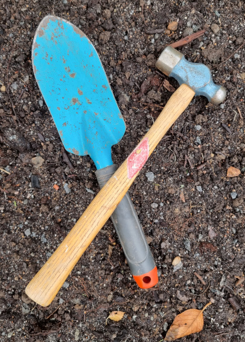

PROJEKT

Rundlarna 2.0
pågående
Här ska det grävas upp och sättas mer enhetligt i färger och färre sorter. Många perenner behöver också delas.
Hallonplantering
2023 höst
Varje hallonplanta ska få en egen plantering med stöd av ihopsvetsade armeringsjärn i cirkel.
Infarten
2024 vår
Här ska vi sätta upp spaljé som insynsskydd. Innanför ska det bli en rabatt med låga träd samt buskar med höstfärg och doft.